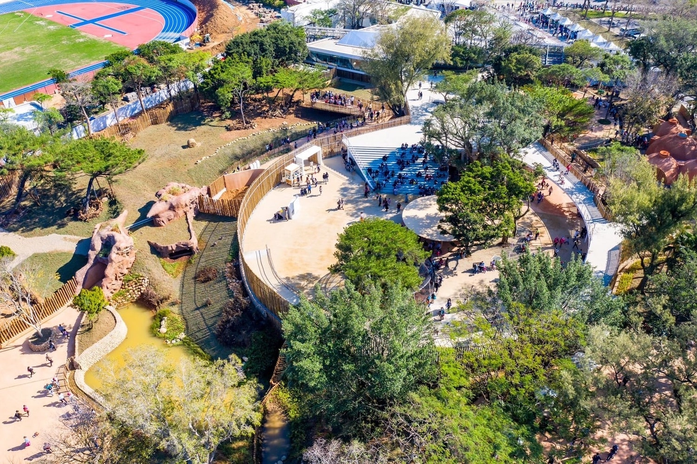

探索新竹
新竹市位於台灣的北部，是一個充滿活力和文化底蘊的城市。以下是新竹著名的景點：
新竹科學工業園區
新竹科學工業園區是台灣高科技產業的重要基地，集中了眾多的科技公司和研發機構。遊客可以在這裡了解台灣科技產業的發展歷程，還可以參觀各種科技展覽。
六福村
六福村是新竹市的一個知名主題樂園，擁有許多刺激的遊樂設施和精彩的表演。這裡是遊客和家庭度假的絕佳去處，讓您享受一整天的歡樂和娛樂。

新竹市動物園
新竹市立動物園位於新竹公園內，佔地面積達2.7公頃。 早期為新竹公園內兒童遊樂園附設的動物園區。 1960年開始擴充修建動物欄舍，並且完成全台首座天然猛獸放飼場。 同時，陸續有許多熱心民眾捐贈動物，如大象、鴛鴦、獅子和鱷魚等等。
獅頭山
獅頭山為一單面山形，主要為砂岩和頁岩的交互層，此地形的特色為容易產生斷崖與岩洞。 位於前山的百年石蹬古道上有一步巨岩石壁，因為岩型酷似蹲伏的獅子頭，獅頭山因而得名。 獅頭山地區內步道縱橫，為先民來往苗栗與南庄之間的要道，現今遺留水濂橋、獅山、六寮及藤坪等多條古道。